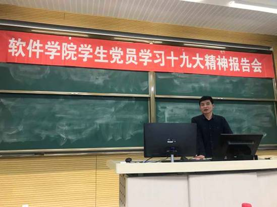
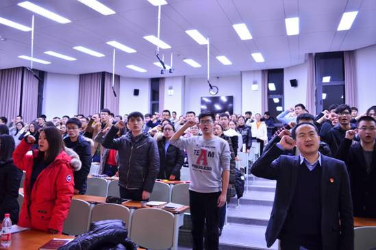

东北大学软件学院学生党总支举行学习十九大精神系列活动
作者：李奇 时间：2017-11-29 点击数：75 字号：大 中 小
软件学院学生党总支认真贯彻落实学院党委的要求，针对学生党支部书记、全体学生党员以“抓关键、育全体”的思路开展不同层次的学习十九大精神活动，在全体学生党员中掀起学习十九大精神的热潮。
11月27日晚20点，软件学院学生党总支在软件学院党员之家举行学生党支部书记学习十九大精神研读交流会，学生党总支委员、学生办主任李奇主持交流会，全体学生党支部书记参加交流会。交流会认真研读了《党的十九大报告学习辅导百问》的《深入学习贯彻习近平新时代中国特色社会主义思想》、《开启新时代 踏上新征程》、《开启全面建设社会主义现代国家新征程》、《全面理解和准确把握新时代党的建设总要求》、《全面把握中国特色社会主义进入新时代》、《推动构建人类命运共同体》等文章，每名支部书记负责讲解一篇文章，并交流自己的研读体会。支部书记研读交流会加强了支部书记的理论水平，使学生党员中的关键少数的思想认识得到进一步提高。
11月28日晚18点30分，软件学院学生党总支举行学生党员学习十九大精神报告会，马克思主义学院任鹏副教授作“新时代·新思想·新目标·新作为”主题报告，软件学院党委副书记兼副院长刘春风、学生办党支部全体党员、全体学生党员参加了报告会。报告会首先举行了重温入党誓词，刘春风副书记带领全体党员一起重温了入党誓词，让全体党员不忘初心，牢记使命。任鹏副教授从十九大基本情况、十九大报告的主体框架、十九大报告的七大亮点、如何贯彻十九大精神四个方面全面讲解了十九大精神。报告会最后，刘春风副书记作了总结讲话，他要求全体党员要认真学习深刻领会十九大报告精神，要坚定理想信念，志存高远，脚踏实地，勇做新时代的弄潮儿。

